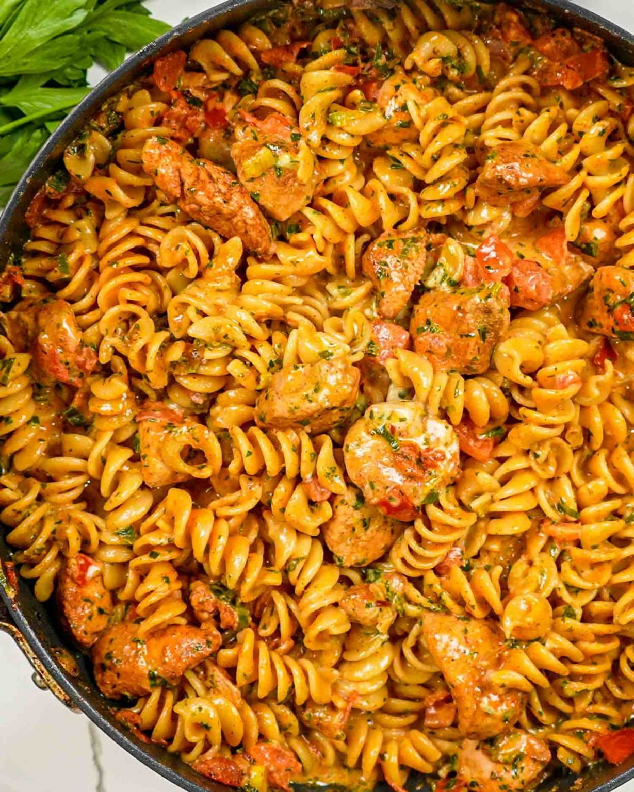

Tomato Chicken Pasta

Tender sautéed chicken and perfectly cooked pasta are tossed together with a creamy tomato sauce and then topped with yummy mozzarella cheese to make this incredibly delicious Creamy Tomato Chicken Pasta! It’s an easy 30-minute meal bursting with flavor!
Ingredients:
- 8 ounce rotini pasta
- 3 tablespoons butter
- 1 pound chicken breast
- 2 tablespoons chili powder
- ½ teaspoon red chili flakes
- ½ teaspoon salt
- ¼ teaspoon pepper
- 1 cup tomatoes
- 6 green onions
- ½ cup parsley
- 1 cup heavy cream
- ½ cup chicken broth
- 1 cup shredded mozarella cheese
Steps:
- Cook the pasta according to package instructions until it’s al
dente (cooked until it’s still firm when bitten). Drain and set
aside.
- Melt the butter in a large skillet over medium-high heat.
- Add the chicken to the skillet, then sprinkle with the chili
powder, red chili flakes and season with salt and pepper. Cook
until the chicken is no longer pink and is cooked through,
should take about 5 minutes.
- Add the tomatoes, green onions and parsley. Stir and cook
for another 2 minutes.
- Add the half and half, chicken broth and cook until it comes
to a boil.
- Add the rotini pasta and stir everything together.
- Sprinkle with mozzarella cheese and parsley if preferred. Serve
while warm.